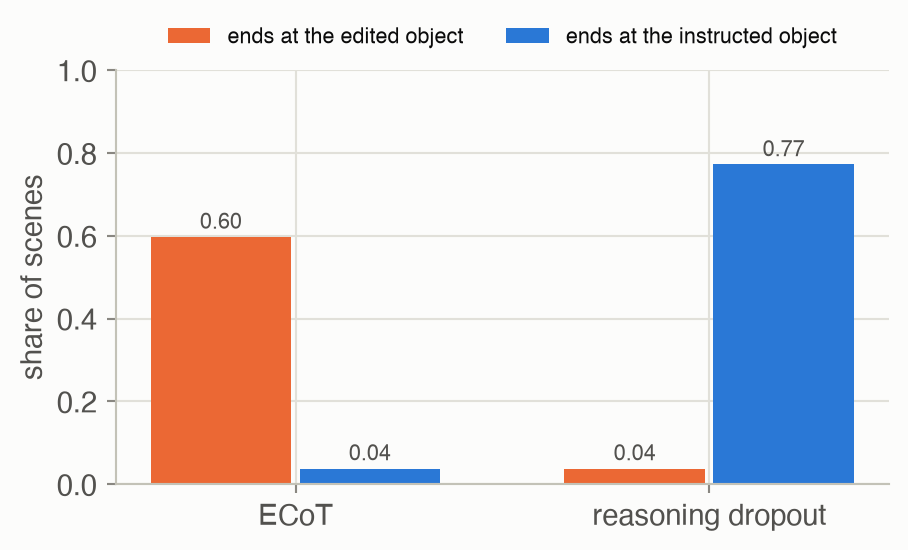

Week 10 · Embodied Reasoning and Test-time Scaling
Lecture of 4 May 2026 · guest: Archit Sharma
Big picture
Where this week fits
Weeks 7 to 9 built ever larger policies from ever more data. Data gives a policy a better prior over the behaviours it has seen, compressed into its weights ▶ 01:00. What it does not give is a way out of a situation the data never covered: faced with something out of distribution, even the best VLA has no mechanism to work its way through, and simply fails ▶ 02:04. Language models hit the same wall: trained on the whole internet, they still could not solve everything, and the field’s answer was to train them specifically to reason, recombining pieces of knowledge they already have instead of recalling a stored answer ▶ 02:35 ▶ 03:08. Since robotics is now multimodal sequence modelling too, the lecture asks whether that idea transfers: can a robot that thinks harder act better ▶ 04:11?
The question this week answers: how do you make a policy reason before it acts, why does that help, how do you avoid paying for the reasoning at every control step, and how do models learn to spend more computation at test time on problems that need it?
The key ideas at a glance
- Reason, then act. Embodied chain-of-thought (ECoT) trains a VLA to write a plan, a subtask, a motion and where the relevant objects and its gripper are, before its action. The reasoning labels are made automatically by foundation models.
- Reasoning is slow, but you can keep most of the gain without it. Writing the reasoning made ECoT run at about one action per second instead of several. Training with reasoning and then dropping it at test time (ECoT-Lite) keeps much of the improvement at full speed.
- Why it helps. The lecture weighs three explanations: better internal features, a learning curriculum, or just more computation. The evidence favours the first: learning to produce the reasoning is what matters; meaningless extra tokens do not help.
- Test-time compute is a scaling axis. Search on top of a policy (AlphaGo) or sampling many answers and verifying them can substitute for a much larger model, but only on problems the model can sometimes solve.
- Reasoning can be learned by RL. With GRPO and rewards that check the final answer, language models learn to think longer and to check themselves, without human examples, provided the base model is strong enough to sometimes succeed.
- Verify the reasoning, not just the answer. In vision, a model can reach the right answer through hallucinated reasoning; rewarding grounded intermediate steps prevents that.
Vocabulary
| Term | Plain meaning |
|---|---|
| Chain of thought (CoT) | Intermediate reasoning written out before the answer |
| Embodied CoT (ECoT) | CoT for a robot policy: plan, subtask, move, object boxes and gripper position, then the action |
| ECoT-Lite | Training recipes that use reasoning data but write no reasoning at test time |
| Reasoning dropout | Training with the reasoning randomly removed, so the policy can act with or without it |
| Reasoning pre-training | Training to write reasoning first, then fine-tuning to output actions only |
| Thinking tokens | Meaningless placeholder tokens that add computation but no information |
| Test-time compute | Computation spent when answering: longer reasoning, many samples, search |
| Verifier | Something that checks or scores a candidate answer: a simulator, a rule, a learned model |
| Best-of-N | Sample N candidates and keep the one the verifier rates best |
| GRPO | Group relative policy optimization: PPO without a critic; advantages from a group of answers |
| Verifiable reward | A reward a rule can compute, such as “the final answer equals 42” |
After this week you can
- Describe ECoT’s reasoning steps, where its labels come from, and what it costs at inference.
- Explain the ECoT-Lite variants and what each says about why reasoning helps.
- Compute the chance that best-of-N succeeds, and explain when search beats a bigger model.
- Explain why reasoning tokens add serial computation to a fixed-depth transformer.
- Compute GRPO’s group-relative advantages and explain why a weak base model learns nothing.
- Say why rewarding only the final answer lets hallucinated reasoning through.
Intuition
TipAnalogy
A new chess player who thinks aloud (“their bishop covers that square, so my knight can’t go there”) learns faster than one who only copies moves, because the commentary teaches what to look at. After a while a good player no longer needs to say it: the habit of looking has stuck. And on a hard position, even a strong player plays better with more time to think, but only if the right move is among those they would consider at all.
Reason, then act
A standard VLA maps an image and an instruction straight to an action. Embodied chain-of-thought inserts steps in between ▶ 05:15: first a plan for the whole task, then the current subtask, then the motion it needs (“the watermelon is behind the robot, so move backward”), then the objects in view with their bounding boxes and the gripper’s position in the image, and only then the action tokens ▶ 06:49. The action tokens are conditioned on all of it: the model has to look carefully and think before it acts.
Nobody can hand-label millions of robot frames with plans and boxes, so the reasoning is generated: a language model writes plans and subtasks from the instruction, detectors and segmenters find the objects, and the gripper is tracked in the image ▶ 06:17. On generalization tests (unseen objects, instructions and scenes), ECoT raised OpenVLA’s absolute success by 28 points with no extra robot data, and the 7B model also beat the 55B RT-2-X ▶ 08:22. Because the reasoning is readable, a person can see why a rollout failed and correct the robot by editing its reasoning while it runs ▶ 09:25. Reasoning learned on one robot’s data was even plausible on other robots ▶ 10:28, and the idea has spread: Gemini Robotics adopted it as a core component ▶ 12:32.
This page’s first toy has the same structure at a tiny scale. A gripper must reach the object of the instructed colour; each scene has 2 objects in 4 possible colours. The demonstrated actions come from a “human” and are noisy (standard deviation 0.2 per axis). The reasoning is the instructed object’s position, a precise label of the kind a detector supplies. One small network plays the VLA: it has an output for the reasoning and one for the action, and a reasoning slot in its input. To “think”, it runs twice: the first pass writes the reasoning, the second reads it from the slot and writes the action.
![Line chart, x-axis number of demos on a log scale from 500 to 5,000, y-axis success from 0 to 1. Five lines. At 500 demos all sit near 0.3. Standard cloning, grey, rises slowest: about 0.31 at 1,000, 0.59 at 2,000, 0.78 at 3,000 and 0.91 at 5,000. Scaffold, light, lies on top of it. ECoT, orange, is above it from 1,000 demos on: 0.36, 0.69, 0.84, 0.97. Reasoning pre-training, green, is above ECoT up to 3,000 demos: 0.40, 0.76, 0.88, 0.96. Reasoning dropout, blue, is highest throughout: 0.41, 0.80, 0.93, 0.98.](w10-embodied-reasoning_files/figure-html/fig-reasoning-output-1.png)
With 500 demos nobody learns the task (all methods 0.29–0.31). From 1,000 on, every network trained to write the reasoning beats plain cloning (Figure 3). At 2,000 demos, cloning reaches 0.59, ECoT 0.69, reasoning pre-training 0.76 and reasoning dropout 0.80. To reach 75%, cloning needs about 2,795 demos and reasoning dropout about 1,830. The mechanism here is simple and worth stating plainly: the reasoning labels are precise, the action labels are noisy, and the network that is trained to locate the object from clean labels has better features for acting. With noise-free actions every method, plain cloning included, succeeds 100% of the time with 1,000 demos: the toy’s benefit is exactly this extra, cleaner supervision.
Reasoning is slow
Writing the reasoning costs tokens, and tokens cost time. OpenVLA, ECoT’s base model, produced about four actions per second; with the full reasoning chain it took about four seconds per action ▶ 13:34 ▶ 14:06. The ECoT-Lite paper measured 1–1.2 Hz for ECoT even after compilation on an H100, against 3–4 Hz for a VLA of the same architecture without reasoning. A robot needs fast control, so the question is whether you can keep the benefit of reasoning without writing it at every step ▶ 15:08.
Answering that requires knowing why reasoning helps ▶ 15:40. Three explanations are plausible:
- Better representations ▶ 16:40. Supervising the reasoning forces the network to build features that track where things are and what matters. If so, the supervision during training is what counts, and the reasoning could be skipped at test time.
- A curriculum ▶ 18:13. Predicting continuous actions is far from anything a VLM was pre-trained on; the reasoning breaks the leap into smaller steps the model can learn first. If so, reasoning could be given as context during training only (a “scaffold”), with no loss on it.
- More computation ▶ 19:48. More tokens in the context give a transformer more computation, even if the tokens mean nothing. If so, meaningless “thinking tokens” would do as well.
ECoT-Lite tested each with a matching recipe on LIBERO-90 ▶ 21:20. Reasoning pre-training (first learn only to write the reasoning, then fine-tune only on actions) and reasoning dropout (train like ECoT but remove the reasoning from some training examples, so the policy can also act without it) came close to full ECoT while writing no reasoning at test time ▶ 22:23 ▶ 23:26; the scaffold helped a little; thinking tokens made things worse. On the real robot full ECoT stayed best, with the Lite variants between it and the standard VLA at the standard VLA’s speed ▶ 24:29. The evidence favours explanation 1.
The toy agrees on the parts it can test. A scaffold without a reasoning loss gives nothing (0.60 against 0.59 at 2,000 demos), and the dropout network does as well without its reasoning as with it (0.80 and 0.79), as on LIBERO, whose tasks are narrow; the paper found test-time reasoning did help on the more varied real-robot tasks. Thinking tokens have no meaning in a network without a sequence, so the toy does not test explanation 3. One result differs from the paper: full ECoT is below the two Lite recipes here. Its reasoning is in fact slightly more accurate than the dropout network’s (mean error 0.067 against 0.081, in a 2 × 2 workspace); the weak link is its action pass, which with the true object position in its slot still reaches only 0.77 (dropout: 0.79). A guess, not tested: ECoT’s action pass only ever learned from the slot, so it never shared in the clean features that the reasoning loss built.
Can you edit what it thinks?
There is a price for not using the reasoning. Put the other object’s position in the reasoning slot, as a person correcting the robot would, and see where each network goes (Figure 4).

ECoT follows the edit: it ends at the edited object in 60% of scenes and at the instructed one in only 4%. The dropout network ignores it and goes where the instruction says (77%): it learned to act from its own features, and the reasoning it writes is no longer what drives its actions. Reasoning is an explanation of behaviour, and a handle for correcting it, only if the actions actually depend on it. You can try this yourself in the first interactive.
Thinking longer: test-time compute
ECoT spends a fixed amount of reasoning on every step. The second half of the lecture asks: what if the model could think longer on harder problems ▶ 26:02? Isn’t that just planning? In a sense yes: classical planners such as A* search an explicit, hand-specified model; AlphaGo searches with learned networks; a reasoning LLM searches implicitly, by writing tokens, in open-ended domains ▶ 27:05.
AlphaGo is the canonical example ▶ 28:07. AlphaGo Zero’s raw network, playing its most likely move with no lookahead, rated 3,055 Elo; with Monte Carlo tree search on top, 5,185. A rule of thumb the lecture quotes: 120 Elo points take either twice the model size or twice the search ▶ 28:40. Closing the gap by size alone would then need a network about 220,436 times larger (Example 2); the lecturer’s figure was roughly 100,000×, and he warned the numbers are inflated ▶ 29:12.
Language works too, with a nuance ▶ 30:45. Snell et al. found that, at equal compute, spending it at test time on a small model beats a 14× larger model on easy and medium questions, but on the hardest questions the larger model wins ▶ 32:18. Test-time compute amplifies what the model already knows: if the right answer is never among the model’s samples, no search finds it ▶ 32:50.
The second toy shows this with a planner that must send a path through a gap in a wall. A small planner believes the gap is somewhere near where it really is and samples paths around that belief; a verifier picks a sample that gets through. Problems are sorted by how often the small planner’s own samples get through (easy: more than 30%, hard: under 2%), as Snell et al. sort questions.
What to watch for. The wall, start and goal stay fixed; only the gap’s position and the sampled paths change. On the easy problem the planner’s samples fan out narrowly around its belief about the gap, which is close to right: 11 of 16 pass through, the perfect verifier picks one, and that path is drawn on to the goal. Then the gap moves to the typical hard problem. The planner’s belief is now well off, so all 16 samples hit the wall below the gap, and quadrupling the search to 64 samples only fills in the same wrong region: 0 of 64 get through. A single sample gets through this hard problem with chance 0.0052, so 64 samples would succeed only 28% of the time on average. Each problem is the one in its difficulty bin whose single-sample success is closest to the bin’s mean, and all samples come from one fixed generator.
![Three panels side by side, easy, medium and hard, each with compute from 4 to 256 on a log x-axis and success from 0 to 1. Easy: the small planner (orange) starts at about 0.92 and the big one (blue) at 0.74; both reach 1 by 16 to 32. Dashed learned-verifier lines level off near 0.96 for both. Medium: both start near 0.42; the big planner is ahead from 16 on (0.86 against 0.78) and both reach 1, with the learned verifier near 0.96. Hard: the small planner climbs slowly from 0.02 to about 0.49 at 256, the big one from 0.10 to about 0.87; solid and dashed lines nearly coincide.](w10-embodied-reasoning_files/figure-html/fig-search-output-1.png)
On easy problems search with the small planner is the better buy: with 4 samples’ worth of compute it succeeds 0.92 of the time, against 0.74 for the big planner’s single sample (Figure 5). On hard problems the big planner wins at every budget: at 64 it reaches 0.64 against 0.23, because the small planner’s samples rarely land in the gap at all. And the verifier matters as much as the planner: a learned verifier that misjudges where the gap is levels off at 0.954 on easy problems however many samples it gets, the chance that its own belief lies inside the gap.
Why reasoning tokens add computation
A transformer’s forward pass has a fixed depth: one pass can do only a fixed number of sequential steps, set by its layers. Each generated token, though, is fed back in and gets another full pass. So writing \(T\) intermediate tokens gives the model about \(T\) times more sequential computation, and Li et al. proved that with \(T\) reasoning tokens a constant-depth transformer can solve any problem a circuit of size \(T\) solves, which without them it cannot ▶ 33:22. This is the formal side of explanation 3; that thinking tokens did not help robots suggests the robot policies were not short of computation, but short of the right features.
Learning to reason with RL
Chain-of-thought started as a prompting trick: show the model a few worked examples with their reasoning written out, and it writes reasoning for new questions ▶ 34:54. It only worked in large models, somewhere around 100 billion parameters; in small ones it hurt ▶ 35:26. And it is brittle: sensitive to the chosen examples, and limited to their style ▶ 37:00. Can a model instead be trained to reason ▶ 38:06?
The answer is reinforcement learning, today usually GRPO ▶ 40:10. PPO needs a critic, a second network that predicts the return of every partial answer, which is expensive and hard to train for language ▶ 40:44. GRPO drops it: sample a group of answers to the same question, score each with a rule (“is the final answer right?”), and use each answer’s reward relative to the group as its advantage ▶ 41:15. No human labels, no reward model, no value function; reasoning emerges because thinking carefully is the only reliable way to get the reward ▶ 41:47. DeepSeek-R1’s model learned to say “wait” and reconsider, a word it almost never used before a point in training ▶ 43:55.
Why did this not work years earlier? Because RL can only reinforce what the model sometimes does: a base model that never produces a correct answer gives nothing to reinforce ▶ 42:53. The third toy shows both effects. A policy chooses how many reasoning steps to take; an answer is right (with chance 0.9) only if it took at least 1 (easy), 4 (medium), 8 (hard) steps. It starts out preferring short answers and is trained by GRPO with groups of 8.
![Two line charts sharing an x-axis of training steps from 0 to 300. Left, accuracy: easy (green) starts at about 0.66 and passes 0.85 after about 45 steps; medium (blue) starts at 0.25 and passes 0.85 after about 140; hard (orange) starts at 0.05, stays low for about 70 steps, then climbs steeply and passes 0.85 after about 190. All end near 0.89. Right, mean reasoning steps: all three start at about 2.5. Easy rises a little and ends near 2.6, medium rises to about 4.3 by step 80 and ends near 4.1, hard rises slowly and then steeply between steps 60 and 150, ending near 7.9.](w10-embodied-reasoning_files/figure-html/fig-grpo-output-1.png)
Nobody tells the policy to think longer; it learns to because longer answers are the ones that earn reward, and only where they do (Figure 6). Easy problems stay short (2.6 steps on average at the end), medium ones settle at 4.1 and hard ones at 7.9, while every accuracy ends above 0.88. Hard problems start late: the policy first has to stumble on a long enough answer inside a group.
![Scatter plot, x-axis starting accuracy on a log scale from about 0.0003 to 0.8, y-axis steps to reach 80% from 0 to 300. Green points for easy problems sit at the right, starting accuracy 0.33 to 0.77, at 9 to 32 steps. Blue points for medium problems, starting accuracy 0.016 to 0.46, lie between about 95 and 205 steps, more steps the lower they start. Orange points for hard problems with starting accuracy 0.026 to 0.16 lie between about 130 and 220 steps; the six with starting accuracy 0.013 or less all sit on the top line, 300, labelled 'never in 300 steps'. A dashed vertical line between 0.013 and 0.016 marks the boundary.](w10-embodied-reasoning_files/figure-html/fig-coldstart-output-1.png)
The boundary is sharp (Figure 7). Every setting whose starting accuracy was 1.65% or more learned within 300 steps in all 8 seeds; none at 1.29% or less did, in any seed. A group of 8 answers then holds a right one only 10% of the time, and a group with no right answer has all its advantages equal to zero. That is the lecture’s point about base models: RL amplifies a capability that is already there.
From answers to grounded reasoning
The same recipe works for vision: Visual-RFT applied GRPO with the overlap between a predicted and a true bounding box (IoU) as the verifiable reward ▶ 46:29. But rewarding only the final answer has a failure mode. In mathematics a right answer from wrong reasoning is rare; in vision, a model can describe a scene that is not there and still output the right box, by luck or by pattern matching, and get the full reward ▶ 48:33. ARGOS, the lecturer’s work at Microsoft, also rewards the intermediate steps, checking with other models whether the objects and moments the reasoning refers to are really where it says ▶ 49:37. On embodied planning benchmarks, reasoning trained this way did 3–4× better than supervised chain-of-thought on the hardest tasks ▶ 51:13.
For continuous control, writing reasoning at every step stays too slow, so the picture the lecture ends with has two levels ▶ 52:15 ▶ 52:46:
Key concepts & formulae
Reasoning before acting
\[ p_\theta(c, a \mid o, \ell) = p_\theta(c \mid o, \ell)\; p_\theta(a \mid o, \ell, c), \qquad \mathcal{L}_{\text{ECoT}} = -\log p_\theta(c \mid o, \ell) - \log p_\theta(a \mid o, \ell, c) \tag{1}\]
In words. One model first writes the reasoning, then the action given the reasoning; training maximizes the likelihood of both the labelled reasoning and the demonstrated action.
Term by term.
- \(o\), \(\ell\): the observation (camera images) and the language instruction.
- \(c\): the reasoning chain, a sequence of tokens (plan, subtask, move, objects with boxes, gripper position).
- \(a\): the action tokens.
- \(p_\theta(c \mid o, \ell)\): the same autoregressive model writing the reasoning, token by token.
- \(p_\theta(a \mid o, \ell, c)\): the action, conditioned on the reasoning written so far. During training the labelled \(c\) is used (teacher forcing); at test time the model’s own.
Why it holds. It is the chain rule of probability, and an autoregressive transformer already factors a sequence this way: putting \(c\) before \(a\) in the token order is all it takes. The toy’s network does the same with two passes: pass 1 is \(p(c \mid o, \ell)\), pass 2 reads \(c\) from its slot.
\[ \mathcal{L}_{\text{drop}} = -\log p_\theta(c \mid o, \ell) - \log p_\theta(a \mid o, \ell, m \cdot c), \qquad m \sim \text{Bernoulli}(1 - p_{\text{drop}}) \tag{2}\]
In words. Train like ECoT, but in a random share \(p_{\text{drop}}\) of examples hide the reasoning from the action, so the policy learns to act with or without it.
Term by term.
- \(m \cdot c\): the reasoning when \(m = 1\), an empty slot when \(m = 0\).
- \(p_{\text{drop}}\): how often the reasoning is hidden; the toy uses 0.5.
- At test time, act with \(m = 0\) (one fast pass) or \(m = 1\) (write the reasoning first).
The other recipes change the losses. Reasoning pre-training: minimize \(-\log p_\theta(c \mid o, \ell)\) first, then only \(-\log p_\theta(a \mid o, \ell)\). Scaffold: keep \(c\) in the input during training but drop its loss term. Thinking tokens: replace \(c\) by meaningless tokens of similar length.
Test-time compute
\[ P(\text{success with } N \text{ samples}) = 1 - (1 - p)^N \tag{3}\]
In words. If each sample independently succeeds with chance \(p\), the search fails only if all \(N\) fail.
Term by term.
- \(p\): the chance that one sample is good, set by what the model knows about this problem.
- \(N\): samples drawn; the compute grows linearly in \(N\).
- \((1-p)^N\): the chance that every sample fails.
Why it holds. Independent samples, and a verifier that recognizes any good one. Numeric check. The toy’s typical medium problem has \(p =\) 0.136 for the small planner, so 16 samples succeed with chance 0.90; the typical hard problem has \(p =\) 0.0052, so 16 samples give only 0.080. For small \(p\), \(N\) must be about \(1/p\) before search helps much: that is “amplifies what the model knows” as a formula.
\[ \hat a = \arg\max_{i = 1..N} V(o, a_i), \qquad P(\text{success}) \to P(\text{the verifier's best is truly good}) \text{ as } N \to \infty \tag{4}\]
In words. With an imperfect verifier, more samples bring you closer to what the verifier likes best, not to what is actually best.
Term by term.
- \(a_i\): the \(i\)-th candidate; \(V\): the verifier’s score.
- In the toy, \(V\) prefers paths closest to where the verifier believes the gap is, a belief off by \(\mathcal{N}(0, \sigma_V^2)\) with \(\sigma_V =\) 0.05. With many samples the pick goes to that belief, which lies inside the gap of width \(w =\) 0.2 with chance \(2\Phi\big(w / (2\sigma_V)\big) - 1 =\) 0.954: the toy’s ceiling.
\[ P(\text{A beats B}) = \frac{1}{1 + 10^{-(E_A - E_B)/400}} \tag{5}\]
In words. A rating gap maps to a win chance through a logistic curve; 400 points is a factor of 10 in the odds.
Term by term.
- \(E_A - E_B\): the rating gap \(\Delta\).
- \(10^{-\Delta/400}\): the odds against A. At \(\Delta = 100\), \(P =\) 0.64, the 64% the guest quoted ▶ 07:18.
Two rules of thumb sit on top: the lecture’s “120 Elo per doubling of model size or of search” ▶ 28:40 means a gap \(\Delta\) is worth a factor \(2^{\Delta/120}\) in either. (AlphaGo Zero’s paper writes its logistic with base \(e\) and the same constant 1/400, a slightly different scale, so treat converted win chances as rough.)
\[ \text{sequential steps} \approx L \cdot (T + 1) \tag{6}\]
In words. A transformer with \(L\) layers does about \(L\) sequential steps per forward pass; each of \(T\) generated tokens adds another pass on top of what came before.
Term by term.
- \(L\): layers, fixed by the model.
- \(T\): reasoning tokens written before the answer; \(T + 1\) passes in all.
- Li et al.’s theorem is the precise form: with \(T\) chain-of-thought steps, a constant-depth transformer solves any problem a boolean circuit of size \(T\) solves; without them, constant depth limits it to a small class of parallel problems.
Learning to reason with RL
\[ \hat A_{i,t} = \tilde r_i = \frac{r_i - \operatorname{mean}(r_1, \dots, r_G)}{\operatorname{std}(r_1, \dots, r_G)} \tag{7}\]
In words. Each answer’s advantage is how much better its reward is than its group’s average, in units of the group’s spread; every token of the answer gets the same advantage.
Term by term.
- \(G\): the group size, answers sampled for one question; \(r_i\): answer \(i\)’s reward, often 0 or 1.
- The mean replaces a learned value function as the baseline; dividing by the standard deviation makes the scale the same for easy and hard questions.
- \(t\): token position; with an outcome reward, all tokens of answer \(i\) share \(\tilde r_i\).
- If all rewards are equal the standard deviation is 0: no answer is preferred, and the advantages are set to 0.
\[ \begin{aligned} J(\theta) = \mathbb{E}\Bigg[\frac{1}{G}\sum_{i=1}^{G}\frac{1}{|o_i|}\sum_{t=1}^{|o_i|} \min\Big(\rho_{i,t} \hat A_{i,t},\ \operatorname{clip}(\rho_{i,t}, 1-\epsilon, 1+\epsilon)\, \hat A_{i,t}\Big)\Bigg] - \beta\, D_{\mathrm{KL}}\big(\pi_\theta \,\|\, \pi_{\text{ref}}\big) \end{aligned} \tag{8}\]
In words. PPO’s clipped objective, applied to every token of every answer in the group, with group-relative advantages instead of a critic’s, and a penalty for drifting from a reference model.
Term by term.
- \(q\): a question; \(o_1, \dots, o_G\): answers sampled from the policy before the update, \(\pi_{\theta_{\text{old}}}\). (Here \(o_i\) is an output, not an observation.)
- \(\rho_{i,t} = \pi_\theta(o_{i,t} \mid q, o_{i,<t}) / \pi_{\theta_{\text{old}}}(o_{i,t} \mid q, o_{i,<t})\): the probability ratio for token \(t\) of answer \(i\).
- \(\operatorname{clip}(\cdot, 1-\epsilon, 1+\epsilon)\) and the \(\min\): PPO’s guard against moving too far in one update (Week 5).
- \(\beta\), \(\pi_{\text{ref}}\): the weight of a KL penalty to a frozen reference policy, added to the loss rather than to the reward.
- The toy takes one gradient step per batch, so \(\rho = 1\) and the clip never acts, and it sets \(\beta = 0\): what remains is \(\sum_i \tilde r_i \nabla \log \pi_\theta(o_i)\), REINFORCE with a group baseline.
\[ P(\text{the group holds a success}) = 1 - (1 - p)^G \tag{9}\]
In words. A group only produces a gradient if at least one of its \(G\) answers is right (for 0/1 rewards); with per-answer success \(p\) this is Equation 3 again, with \(G\) for \(N\).
Term by term. \(p\): the current policy’s chance of a right answer; \(G\): group size. Numeric check. At the toy’s stalled starting accuracy 0.0129, a group of 8 has a success 9.8% of the time, and that rare signal was not enough in 300 steps.
Worked examples
Example 1: GRPO advantages for one group
A group of 8 answers to one question; answers 1 and 4 are right.
Mean reward 0.250, standard deviation 0.433 (over the group, dividing by \(G\)).
| Answer | Reward \(r_i\) | Advantage \(\hat A_i\) |
|---|---|---|
| 1 | 1 | +1.732 |
| 2 | 0 | -0.577 |
| 3 | 0 | -0.577 |
| 4 | 1 | +1.732 |
| 5 | 0 | -0.577 |
| 6 | 0 | -0.577 |
| 7 | 0 | -0.577 |
| 8 | 0 | -0.577 |
The two right answers get $+$1.732 each and the six wrong ones -0.577: the advantages sum to zero, so the update moves probability from the wrong answers to the right ones without a value network. Had all 8 been right, or all wrong, every advantage would be 0: the question teaches nothing at the current policy. That is why GRPO training keeps feeding a model questions it gets right only sometimes.
Example 2: what AlphaGo Zero’s search is worth
| Quantity | Value |
|---|---|
| Raw network (no search) | 3,055 Elo |
| With tree search | 5,185 Elo |
| Gap \(\Delta\) | 2,130 |
| Raw network’s chance against the full system (Equation 5) | 4.7e-06 |
| Doublings at 120 Elo each | 17.75 |
| Equivalent growth in model size, \(2^{\Delta/120}\) | 220,436× |
On the base-10 Elo scale, the raw network would beat the searching system about once in 211,350 games. By the rule of thumb, matching the search by size alone would take a network about 220,436 times larger; the lecturer said roughly 100,000×, and cautioned that self-play against its own earlier versions inflates such numbers. Either way it is the lecture’s point: test-time search bought what no feasible model size could ▶ 29:43.
Example 3: search or a bigger model, on one problem
The second toy’s typical problem of each difficulty (the one whose small-planner success is closest to its bin’s mean), with 16 small samples’ worth of compute: the small planner draws 16, the 4× costlier big planner 4 (Equation 3, perfect verifier).
| Problem | \(p\) small | \(p\) big | small, 16 samples | big, 4 samples |
|---|---|---|---|---|
| easy | 0.4870 | 0.7305 | 1.000 | 0.995 |
| medium | 0.1364 | 0.4440 | 0.904 | 0.904 |
| hard | 0.0052 | 0.1159 | 0.080 | 0.389 |
On the easy problem the small planner’s many tries win; on the medium and hard ones the big planner’s better aim wins, decisively on the hard one, where the small planner’s samples almost never land in the gap. Snell et al. made the same choice per question, by its estimated difficulty, and called it compute-optimal scaling.
Interactive
Edit the robot’s reasoning
The two networks of Figure 4 (seed 0, 2,000 demos) on 12 held-out scenes. Choose what goes into the reasoning slot: the network’s own reasoning, the other object’s position, or any point you set. Your browser runs both networks.
What to try. With its own reasoning, both arrows end near the instructed object in most scenes. Switch the slot to the other object: the orange ECoT arrow swings over to it, while the blue dropout arrow hardly moves. Then choose a point of your own and drag it around: ECoT chases it, as the robot in the lecture followed a person’s corrected reasoning; the dropout network keeps going where the instruction says. Its reasoning is accurate, but it is not what drives its action.
Search through the gap
Eight problems from each difficulty bin, ordered by how often one small-planner sample gets through. Pick a planner, a number of samples and a verifier; your browser draws the samples (with a fixed seed per setting), and the line below gives the exact chance that best-of-N with a perfect verifier succeeds (Equation 3).
What to try. Start on a hard problem with the small planner and 16 samples: the paths cluster on one side of the gap, because the planner is wrong about where the gap is, and more samples only fill in the same wrong region. Switch to the big planner with 4 samples, the same compute: its paths aim closer to the gap. Then go to an easy problem, where the small planner’s 16 tries almost always include a good one. Finally choose the learned verifier on an easy problem with 64 samples: whenever its belief (the dotted mark) falls outside the gap, it confidently picks a path that hits the wall.
Algorithm & code
Reasoning, dropout and the two passes
def with_slot(O, slot, filled) -> Array:
"""Append the reasoning slot (n, 2) and a 0/1 flag saying whether it
is filled. An empty slot is zeros with flag 0."""
return np.concatenate([O, slot, filled[:, None]], axis=1)
def train_reasoner(O, R, A, method, rng, steps=STEPS):
"""One MLP, outputs [reasoning (2), action (2)]. Each method decides
which pass gets which loss (a mask picks the trained outputs):
standard empty slot -> action
ecot empty slot -> reasoning; true reasoning in slot -> action
dropout as ecot, but the slot is emptied for half the action rows
pretrain empty slot -> reasoning for half the steps, then -> action
scaffold true reasoning in slot (or emptied) -> action; no
reasoning loss, so the network never learns to write it
Every method takes the same number of gradient steps."""
params = nn.init_mlp([O.shape[1] + 3, HIDDEN, HIDDEN, 4], rng)
opt = nn.Adam(params, 0.003)
for s in range(steps):
idx = rng.integers(0, len(O), min(BATCH, len(O)))
o, r, y = O[idx], R[idx], np.c_[R[idx], A[idx]]
b = len(idx)
empty, no, yes = np.zeros((b, 2)), np.zeros(b), np.ones(b)
on_r = np.c_[np.ones((b, 2)), np.zeros((b, 2))] # train reasoning
on_a = 1 - on_r # train action
keep = rng.random(b) > P_DROP # dropout draw
dropped = np.where(keep[:, None], r, 0.0)
passes = { # (slot, flag, loss mask) per pass
"standard": [(empty, no, on_a)],
"ecot": [(empty, no, on_r), (r, yes, on_a)],
"dropout": [(empty, no, on_r), (dropped, keep * 1.0, on_a)],
"pretrain": [(empty, no, on_r if s < steps // 2 else on_a)],
"scaffold": [(dropped, keep * 1.0, on_a)],
}[method]
X = np.concatenate([with_slot(o, sl, f) for sl, f, _ in passes])
M = np.concatenate([m for *_, m in passes])
Y = np.concatenate([y] * len(passes))
Yh, cache = nn.forward(params, X)
dY = 2 * M * (Yh - Y) / len(X) # masked MSE
params = opt.step(params, nn.backward(params, cache, dY))
return params
def reason(params, O) -> Array:
"""Pass 1: the reasoning the network writes into an empty slot."""
n = len(O)
out = nn.predict(params, with_slot(O, np.zeros((n, 2)), np.zeros(n)))
return out[:, :2]
def act(params, O, think, slot=None) -> Array:
"""The action. think=False: one pass with an empty slot.
think=True: write the reasoning first (or use a given slot, e.g. a
human's correction), then a second pass reads it."""
n = len(O)
if not think:
empty = with_slot(O, np.zeros((n, 2)), np.zeros(n))
return nn.predict(params, empty)[:, 2:]
slot = reason(params, O) if slot is None else slot
return nn.predict(params, with_slot(O, slot, np.ones(n)))[:, 2:]import numpy as np
import torch
import torch.nn as nn
from rlc.toys import w10_reasoning as w
torch.manual_seed(0)
O, R, A, _ = (torch.tensor(x, dtype=torch.float32) if not isinstance(x, tuple) else x
for x in w.demos(np.random.default_rng(0), 2000))
d_obs = O.shape[1]
# One network, two heads: [reasoning (2), action (2)]. The input ends with
# the reasoning slot (2) and a flag (1) saying whether the slot is filled.
policy = nn.Sequential(nn.Linear(d_obs + 3, 64), nn.Tanh(),
nn.Linear(64, 64), nn.Tanh(), nn.Linear(64, 4))
opt = torch.optim.Adam(policy.parameters(), lr=3e-3)
def with_slot(o, slot, filled):
return torch.cat([o, slot, filled[:, None]], dim=1) # (B, d_obs + 3)
p_drop, losses = 0.5, []
for step in range(1500):
idx = torch.randint(len(O), (128,))
o, r, a = O[idx], R[idx], A[idx]
empty, zero = torch.zeros_like(r), torch.zeros(len(idx))
# Pass 1: empty slot -> write the reasoning (labels are precise).
loss_r = ((policy(with_slot(o, empty, zero))[:, :2] - r) ** 2).sum(1).mean()
# Pass 2: reasoning in the slot, except for a random half (dropout),
# -> the action. Teacher forcing: the *labelled* reasoning goes in.
keep = (torch.rand(len(idx)) > p_drop).float() # (B,)
slot = r * keep[:, None]
loss_a = ((policy(with_slot(o, slot, keep))[:, 2:] - a) ** 2).sum(1).mean()
loss = loss_r + loss_a
opt.zero_grad(); loss.backward(); opt.step()
losses.append(loss.item())
assert np.mean(losses[-50:]) < 0.5 * np.mean(losses[:50])
# Test time, fast: one pass with an empty slot. Slow: write, then read.
with torch.no_grad():
o = O[:500]
empty = torch.zeros(len(o), 2)
fast = policy(with_slot(o, empty, torch.zeros(len(o))))[:, 2:]
thought = policy(with_slot(o, empty, torch.zeros(len(o))))[:, :2]
slow = policy(with_slot(o, thought, torch.ones(len(o))))[:, 2:]
r_err = (thought - R[:500]).norm(dim=1).mean()
assert fast.shape == slow.shape == (500, 2) and r_err < 0.3, r_errThe NumPy version builds both passes into one batch and uses a mask to choose which outputs each row trains; the PyTorch sketch computes the two losses separately, which is the same thing. torch.no_grad() turns off gradient tracking for inference. In a real VLA the “slot” is simply the token sequence: the reasoning tokens sit between the observation and the action tokens, dropout deletes them from some training sequences, and the fast mode starts decoding the action right after the prompt.
GRPO
def grpo_advantages(r) -> Array:
"""Group-relative advantages: (r - mean) / std within one group of
answers to the same question. All equal rewards give all zeros:
nothing in the group to prefer."""
sd = r.std()
return (r - r.mean()) / sd if sd > 0 else np.zeros_like(r)
def grpo_train(lam, rng, steps=GRPO_STEPS):
"""GRPO with one gradient step per batch, so the policy ratio is 1
and PPO's clip never acts; no KL term. Per step: BATCH_Q questions,
a group of G answers each, binary rewards, and the gradient of
sum A_i log pi(L_i). Returns accuracy and mean length per kind
after every step, (steps, kinds) each."""
theta = start_logits(lam)
kinds = list(NEED.values())
acc, length = [], []
for _ in range(steps):
grad = np.zeros_like(theta)
for _ in range(BATCH_Q):
k = rng.integers(len(kinds))
pi = nn.softmax(theta[k])
L = rng.choice(L_MAX + 1, G, p=pi) # G answers
r = (L >= kinds[k]) & (rng.random(G) < P_RIGHT)
A = grpo_advantages(r.astype(float))
# d log softmax(theta)[L] / d theta = onehot(L) - pi
onehot = np.eye(L_MAX + 1)[L] # (G, L_MAX + 1)
grad[k] += A @ (onehot - pi) / G
theta = theta + LR * grad / BATCH_Q # gradient ascent
pi = nn.softmax(theta)
acc.append(accuracy(theta))
length.append(pi @ np.arange(L_MAX + 1.0))
return np.array(acc), np.array(length)import torch
torch.manual_seed(0)
L_MAX, G, BETA = 10, 8, 0.01
need = torch.tensor([1, 4, 8]) # steps each kind needs
logits = torch.nn.Parameter(-0.3 * torch.arange(L_MAX + 1.0).repeat(3, 1))
ref = logits.detach().clone() # frozen reference policy
opt = torch.optim.Adam([logits], lr=0.05)
def accuracy():
pi = torch.softmax(logits, dim=1) # (3, L_MAX + 1)
enough = torch.arange(L_MAX + 1)[None, :] >= need[:, None]
return (0.9 * pi * enough).sum(1)
start = accuracy().detach()
for it in range(150):
kind = torch.randint(3, (16,)) # 16 questions
logp_all = torch.log_softmax(logits[kind], dim=1) # (16, L_MAX + 1)
with torch.no_grad(): # sampling is not differentiated
L = torch.multinomial(logp_all.exp(), G, replacement=True) # (16, G)
r = ((L >= need[kind, None]) & (torch.rand(16, G) < 0.9)).float()
sd = r.std(dim=1, unbiased=False, keepdim=True)
adv = torch.where(sd > 0, (r - r.mean(1, keepdim=True)) / sd.clamp_min(1e-8),
torch.zeros_like(r)) # (16, G), group-relative
logp = logp_all.gather(1, L) # (16, G)
# k3 estimator of KL(pi || ref), always >= 0, as in DeepSeekMath
ref_logp = torch.log_softmax(ref[kind], dim=1).gather(1, L)
kl = (ref_logp - logp).exp() - (ref_logp - logp) - 1
# One update per batch: the policy ratio is 1, so this is the gradient
# of sum A_i log pi(L_i), plus the KL penalty.
loss = -(adv * logp - BETA * kl).mean()
opt.zero_grad(); loss.backward(); opt.step()
end = accuracy().detach()
assert (end > start).all() and end[2] > 0.5, (start, end)The PyTorch sketch adds the KL penalty to a frozen reference (Equation 8), which the NumPy toy leaves out. Like the toy, it takes one update per batch, so the ratio \(\rho\) stays 1 and the clip never acts; with several updates per batch you would add PPO’s clipped ratio from Equation 8, which this site does not write out as code because the course’s fourth homework asks for it. For a language model, L would be a whole sampled answer and logp the sum of its tokens’ log-probabilities (or, as in the paper, a per-token average); everything else is the same.
Papers
Papers discussed in class
Key papers from the lecture
Guest spotlight
Archit Sharma (research scientist at Google DeepMind working on post-training and reasoning, a creator of DPO, and lead of the Gemini Deep Think model that reached gold-medal level on International Mathematical Olympiad problems) spoke about scaling test-time compute at the frontier. Until 2024, most of the progress of language models came from scaling pre-training: ever larger models trained to predict the next token ▶ 01:35. From late 2024, reasoning models added a second axis: instead of answering at once, they think first, and accuracy rises predictably with the time allowed. In the Gemini 2.5 report, performance on the AIME maths competition rose by more than 20 points with thinking time ▶ 03:40. A system with test-time compute is one that, instead of a single fixed forward pass, searches in some way before answering ▶ 05:13; AlphaGo, whose search capped at 5 seconds per move took the same network from about 3,000 to about 5,000 Elo, is the classic case ▶ 06:15.
For language, chain-of-thought prompting showed the effect; RL with verifiable rewards made it a training method, and the length of the model’s answers grows by itself over training ▶ 09:51. Longer chains are only one way to spend compute: sampling in parallel, revising previous answers, calling tools such as search or code, and verifying one’s own answer are others, and agentic coding and research tools combine them in harnesses around a model ▶ 11:56. His example was Deep Think on olympiad proofs: with inference compute on a log scale, the share of proofs judged correct by experts rose from about 40% to about 90%, with the model working for hours ▶ 14:02. The gains extend to tasks without a verifier, such as generating a detailed 3-D scene in HTML ▶ 15:38.
Open questions he named: using tokens and tools efficiently ▶ 18:46; test-time scaling viewed as increasing the depth of computation, and whether tokens are the best way to add depth ▶ 19:19; keeping agents productive and safe over days or weeks ▶ 19:49; discovering which problems matter, not just solving well-posed ones ▶ 21:55; and improving with experience instead of reasoning from first principles every time ▶ 22:58. In the Q&A: reasoning in continuous latent space could be more efficient than in tokens but is harder to get working ▶ 24:32; memories and skills are an early, still manual, form of learning from experience ▶ 26:36; scaling RL needs very stable infrastructure, and verifiable problems run out quickly because easy ones stop carrying signal ▶ 28:12 ▶ 29:15; and long-running agents still get stuck on a wrong idea, partly from misunderstanding under-specified problems ▶ 30:46.
How it connects to this week. The talk is the language-model side of the lecture’s second half: test-time compute as a scaling axis, RL that makes long reasoning emerge, and verification as the limiting factor. His point that easy problems stop carrying signal is the third toy’s zero-advantage groups seen from the other end.
Solved problems
1. How many samples? One sample of a planner succeeds with probability 0.05. With a perfect verifier, how many samples give a 90% chance of success? What if \(p = 0.005\)?
TipSolution
Solve \(1 - (1 - p)^N \ge 0.9\) (Equation 3): \(N \ge \ln 0.1 / \ln(1 - p)\). For \(p = 0.05\): \(N \ge 2.303 / 0.0513 = 44.9\), so 45 samples. For \(p = 0.005\): \(N \ge 2.303 / 0.00501 = 459.4\), so 460. Ten times rarer success costs ten times the compute: for small \(p\), \(N \approx 2.3/p\).
2. A group with one right answer. A GRPO group of 8 has exactly one right answer. Compute the advantages. What happens to the update if the group size doubles to 16 with still exactly one right answer?
TipSolution
Mean \(1/8 = 0.125\); population standard deviation \(\sqrt{0.125 \cdot 0.875} = 0.331\). Right answer: \((1 - 0.125)/0.331 = 2.646\); wrong ones: \(-0.125/0.331 = -0.378\) (Equation 7). With 16: mean \(0.0625\), sd \(\sqrt{0.0625 \cdot 0.9375} = 0.242\), so \(+3.873\) and \(-0.258\). The rarer the success within its group, the larger its advantage: normalization by the standard deviation makes a single success count heavily, which is what lets GRPO learn from problems it rarely solves.
3. Elo and model size. By the rule of thumb of 120 Elo per doubling, how much larger would a model need to be to gain 600 Elo? What is the weaker side’s win chance across that gap?
TipSolution
\(600/120 = 5\) doublings: \(2^5 = 32\) times larger. Win chance (Equation 5): \(1/(1 + 10^{600/400}) = 1/(1 + 31.6) = 3.1\%\).
4. Which recipe? You have robot demonstrations and reasoning labels, the robot needs 10 Hz control, and you want operators to be able to correct the robot by editing its plan. ECoT, reasoning dropout or reasoning pre-training?
TipSolution
Pre-training cannot write reasoning at test time at all, so it offers nothing to edit. Full ECoT can be corrected but writes its reasoning at every step, which ran at about 1 Hz in the paper. Reasoning dropout is the natural fit: fast without reasoning, and able to switch it on. But check that its actions really depend on the reasoning when it is on: in this page’s toy the dropout network ignored edits (Figure 4). A practical compromise is to run fast without reasoning and reason only occasionally, or at a higher level, as in the two-level design (Figure 8).
5. Rewarding the answer only. A vision model answers a multiple-choice question about an image with 4 options. With grounded reasoning it is right 80% of the time; with hallucinated reasoning, which is cheaper to produce, it guesses from patterns and is right 60% of the time. The reward is 1 for a right answer. A second reward adds 0.5 when the objects mentioned in the reasoning are really in the image. What does each reward favour?
TipSolution
Answer only: expected reward 0.8 against 0.6, so grounded reasoning is preferred, but the gap is only 0.2, and on questions where pattern matching does as well as reasoning there is no pressure at all to ground the reasoning. With the extra check: grounded \(0.8 + 0.5 = 1.3\), hallucinated \(0.6 + 0 = 0.6\): the gap more than triples and holds on every question, which is the argument for verifying the reasoning as well as the answer (the lecture’s ARGOS).
Recap
- A policy can reason before it acts. ECoT writes plans, subtasks, motions and grounded features before its actions, with labels made by foundation models. Why it matters: it improved a VLA’s generalization by 28 points without new robot data, and made it readable and correctable.
- Most of the gain comes from learning to produce the reasoning. Reasoning pre-training and dropout keep much of it with no reasoning at test time; meaningless thinking tokens do not. Why it matters: robots need fast control; in the toy, reasoning labels cut the demos needed for 75% success from about 2,795 to 1,830.
- Reasoning that is not used cannot be edited. Why it matters: interpretability and human correction require actions that actually depend on the reasoning; in the toy, the faster dropout network ignored edits.
- Test-time compute is a scaling axis, bounded by the model and the verifier. Search beats a bigger model on problems the model sometimes solves, and loses on those it almost never does; an imperfect verifier caps what search can reach. Why it matters: it decides where to spend compute, in training or at inference.
- RL can make reasoning emerge, once the base model is good enough. GRPO’s group-relative advantages reward whatever works, including thinking longer; groups with no success teach nothing. Why it matters: it is how today’s reasoning models are trained, and why they appeared only once base models were strong.
- Verify the reasoning, not just the answer. Why it matters: in vision and robotics, right answers from hallucinated reasoning are common, and outcome-only rewards reinforce them.
Cheat sheet & connections
| Name | Formula | Where |
|---|---|---|
| Embodied CoT | \(-\log p(c \mid o, \ell) - \log p(a \mid o, \ell, c)\) | Equation 1 |
| Reasoning dropout | as ECoT, with \(m \cdot c\), \(m \sim\) Bernoulli\((1 - p_{\text{drop}})\) | Equation 2 |
| Best-of-N | \(1 - (1 - p)^N\) | Equation 3 |
| Learned verifier | \(\arg\max_i V(o, a_i)\); capped by \(V\)’s own errors | Equation 4 |
| Elo ★ | \(1/(1 + 10^{-\Delta/400})\); 120 Elo ≈ one doubling | Equation 5 |
| Reasoning as depth | sequential steps \(\approx L (T + 1)\) | Equation 6 |
| Group advantage | \((r_i - \text{mean}\, r)/\text{std}\, r\) | Equation 7 |
| GRPO ★ | clipped ratio × \(\hat A\), minus \(\beta\) KL to \(\pi_{\text{ref}}\) | Equation 8 |
| Learning signal | \(1 - (1 - p)^G\) | Equation 9 |
Common pitfalls.
- Writing reasoning at every control step and losing the control rate.
- Assuming the reasoning explains the behaviour: check that actions change when the reasoning does.
- Expecting meaningless extra tokens to substitute for meaningful reasoning labels.
- Spending test-time compute on problems the model essentially never solves.
- Trusting a learned verifier at large \(N\): search finds its blind spots.
- Starting RL from a base model with near-zero success, or on problems it always solves.
- Rewarding only final answers when right answers can come from hallucinated reasoning.
Connections. Week 5’s PPO is GRPO’s parent; the critic is replaced by a group average. Week 7’s transformers and tokens are why reasoning can simply be more tokens. Week 8’s planning with learned models is test-time compute for control. Week 9’s VLAs are what ECoT makes reason, and π0.5’s subtask prediction is reasoning at the high level of Figure 8. Week 11 looks at what is still missing. In the ADM Companion: Monte Carlo tree search, the search behind AlphaGo.
Resources
- Lecture: video (55:41)
- Slides: Official slides (ETH; password-protected) · Community rebuild (unofficial, student repo)
- Guest lecture: Archit Sharma (Google DeepMind), Scaling Test-Time Compute at the Frontier: video (32:19)
- Papers:
- In-Context Imitation Learning via Next-Token Prediction (Fu et al., 2024)
- Voyager: An Open-Ended Embodied Agent with Large Language Models (Wang et al., 2023)
- Training Strategies for Efficient Embodied Reasoning (Chen et al., 2025)
- Robotic Control via Embodied Chain-of-Thought Reasoning (Zawalski, Chen, Pertsch, Mees, Finn & Levine, 2024)
- Chain-of-Thought Prompting Elicits Reasoning in Large Language Models (Wei, Wang, Schuurmans, Bosma, Ichter, Xia, Chi, Le & Zhou, 2022)
- Chain of Thought Empowers Transformers to Solve Inherently Serial Problems (Li, Liu, Zhou & Ma, 2024)
- Scaling LLM Test-Time Compute Optimally Can Be More Effective than Scaling Parameters for Reasoning (Snell, Lee, Xu & Kumar, 2025)
- DeepSeekMath: Pushing the Limits of Mathematical Reasoning in Open Language Models (Shao et al., 2024)
- DeepSeek-R1 Incentivizes Reasoning in LLMs through Reinforcement Learning (DeepSeek-AI (Guo et al.), 2025)
- Mastering the Game of Go without Human Knowledge (Silver et al., 2017)